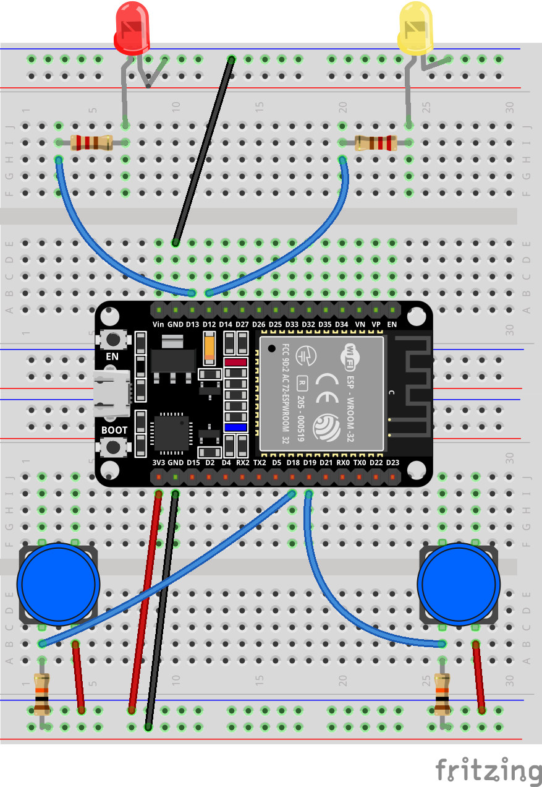

Basic Experiments

This introductory chapter guides you through the process of building fun, interactive devices—capable of visual, physical, and auditory responses—using a carefully selected range of common and engaging components such as LEDs, buzzers, buttons, and sensors. Through a series of hands-on experiments that progress from simple to complex, you will quickly familiarize yourself with hardware wiring, programming logic, and debugging techniques, rapidly transforming from a mere observer into a maker.
1. LED Blinking
In this experiment, you will learn how to control an LED using the ESP32 microcontroller. You will write a simple program to make the LED blink at regular intervals, introducing you to basic programming concepts and GPIO pin control.
Materials Needed:
ESP32 Development Board
LED
Resistor (220Ω)
Breadboard and Jumper Wires
Wiring Diagram:

Example code:
// Define the LED connection pin
#define LED_PIN 2
void setup()
{
// Set GPIO2 to output mode
pinMode(LED_PIN, OUTPUT);
}
void loop()
{
// Turn on the LED
digitalWrite(LED_PIN, HIGH);
// Delay for 1 second
delay(1000);
// Turn off the LED
digitalWrite(LED_PIN, LOW);
// Delay for 1 second
delay(1000);
}
Display Effect:

The LED light will continuously turn on and off at one-second intervals—lighting up, dimming, lighting up again, dimming again—creating a ceaseless breathing or flashing rhythm.
2. Button LED
This experiment aims to teach two core programming techniques: key debouncing and state toggling. Two independent keys will control the on/off state of red and yellow LEDs respectively.
You will learn how to use `digitalRead()` to capture the rising edge trigger of a key (i.e., the instant it’s pressed) , and how to implement the logic of “state toggling once per press” using a state flag (bool variable) .
Simultaneously, simple software delay debouncing is incorporated into the code, allowing you to understand the signal jitter problem caused by mechanical keys at the instant they are pressed and its solution.
Materials Needed:
ESP32 Development Board
Button (2 PCS)
LED (Yellow、Red)
Resistor (220Ω)
Breadboard and Jumper Wires
Wiring Diagram:
{kind=link}

Example code:
Display Effect:

Pressing button 1 (GPIO18): The red LED’s state toggles—it turns on if currently off, and off if currently on, toggling each time it’s pressed.
Pressing button 2 (GPIO19): The yellow LED follows the same toggling logic, without interfering with each other.